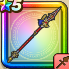

世界樹の天槍【紅】
攻略班 7.0点 / けものづきまわしげり陽炎突きメタル双連撃導きの天翔
くわしい特徴
【レベル別習得スキル】 Lv1【バトマス】攻撃力+5 Lv1【海賊】攻撃力+5 Lv1けものづき（消費MP：3）けもの系に威力180%それ以外の系統には120%の斬撃ダメージを与える Lv10まわしげり（消費MP：8）足で周囲をなぎはらい敵全体に威力110%の体技ダメージを与える Lv15陽炎突き（消費MP：21）敵1体に310％のメラ属性斬撃ダメージを与える Lv20メタル双連撃（消費MP：28）敵全体にメタル系なら+4ダメージを2回与える。それ以外には威力130％の斬撃ダメージを2回与える Lv30導きの天翔（消費MP：31）敵全体に285％のイオ属性斬撃ダメージを与える Lv35エレメント系へのダメージ+5% Lv40悪魔系へのダメージ+5% Lv45攻撃時+2%の確率で転びを与える Lv50攻撃力+12 【限界突破スキル】 1凸スキルの斬撃・体技ダメージ+5% 2凸スキルの斬撃・体技ダメージ+5% 3凸スキルの斬撃・体技ダメージ+5% 4凸スキルの斬撃・体技ダメージ+5%